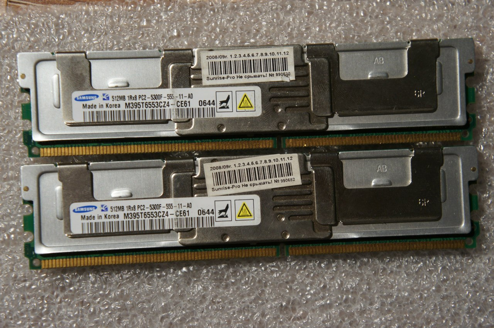

Programming, electronics, lifestyle
В районе двух лет назад, столкнулся с интересным для себя открытием, при покупке комплектующих, мне в довесок досталась серверная память Samsung M395T6553CZ4-CE61. Мне стало интересно, чем она отличается от обычной ОЗУ, и я решил найти о ней информацию. Искать долго не пришлось, но среди источников не было ни одного, содержащего всё и сразу. Тогда я и написал эту заметку, в которой постарался объединить для себя всю полезную информацию.

Надо заметить, что ножки у неё смещены и вместо обычной DDR2 её не вставишь.
Для начала есть два основных отличия этой памяти от обычной:
Я не стану писать, что такое буфферизированная память, тк есть отличная статья объясняющая это.
ECC (error-correcting code) - технология, позволяющая проверять и исправлять данные при записи на носитель - ячейку оперативной памяти. Технология позволяет избавиться от одиночных ошибок, но при этом замедляет процесс копирования/записи данных. non-ECC - отсутствие таковой защиты.
Отличие буферизованного оперативного запоминающего устройства от обычного ОЗУ: Обычно, оперативное запоминающее устройство с функцией EСC стоит в серверах, где важна надежность. А дома ставится без ЕСС, так как нужна скорость.
Принцип действия:
Работает буферизованная память таким образом: ширина шины обычной non-ECC памяти - 64 бита, а на память с ECC устанавливается 9-я микросхема, которая расширяет шину до 72 бит, то есть она хранит не бит, а байт четности. Эти лишние 8 бит, используют специальный алгоритм, который позволяет контролеру памяти исправлять на лету одиночные ошибки и обнаруживать двойные (тройные и более старшие) ошибки, при считывании каждого слова. Если находится более одной ошибки, то генерируется системная ошибка, а дальше по обстоятельствам.
Пример алгоритма определения ошибок:
Для битовых последовательностей данных определенной длины можно построить, так называемый, полный код радиуса 3 - код Шеннона (если собственная память не глючит). Для байта количество контрольных бит кода Шеннона равно трём, для 8 байт (64 бит) - 8-ми. Поэтому, собственно, ECC-память 72-битная.
ECC-память только предоставляет дополнительные 8 разрядов для хранения контрольной суммы, а сам алгоритм обнаружения и исправления ошибки реализуется на уровне северного моста – чипсета. Код радиуса 3 позволяет обнаружить не только сам факт наличия одиночной ошибки, но и бит, в котором она произошла. Соответственно, если известен бит с ошибкой, то его исправление есть просто инвертирование. Естественно, что в случае одновременной ошибки в двух битах контрольный байт будет указывать на двойную ошибку без возможности исправления, при трех и более неверных битах - будет содержать неверную информацию и результат исправления будет плачевен, но вероятность такого события крайне низка.
Примечание:
Если хотите подробно узнать о ECC и алгоритмах обнаружения ошибок, то возьмите любой учебник по дискретной математике, наверняка в нем отыщется раздел о кодах, исправляющих ошибки.